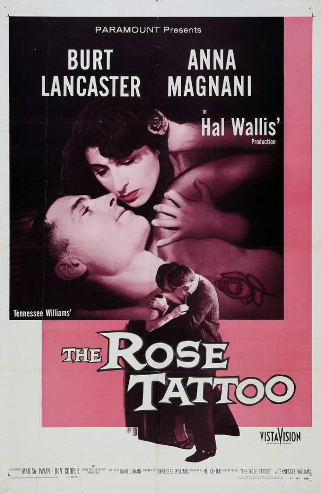

The Rose Tattoo
28th Academy Awards
(Oscars 1956)
8 Nominations, 3 Awards
| Nominations | ||
|---|---|---|
| Category | Nominees | Result |
| Best Motion Picture | Hal B. Wallis | Nominated |
| Actress | Anna Magnani | Won |
| Actress in a Supporting Role | Marisa Pavan | Nominated |
| Cinematography (Black-and-White) | James Wong Howe | Won |
| Film Editing | Warren Low | Nominated |
| Art Direction (Black-and-White) | Arthur Krams, Hal Pereira, Sam Comer, and Tambi Larsen | Won |
| Costume Design (Black-and-White) | Edith Head | Nominated |
| Music (Music Score of a Dramatic or Comedy Picture) | Alex North | Nominated |